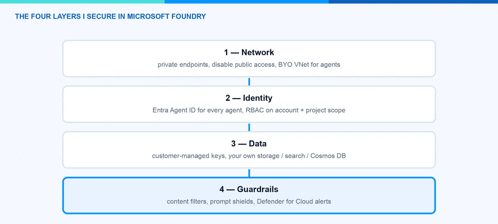
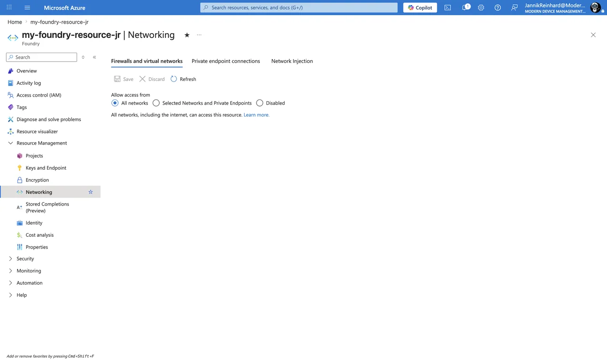
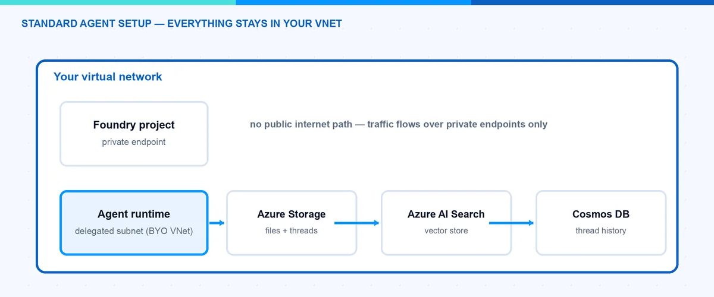
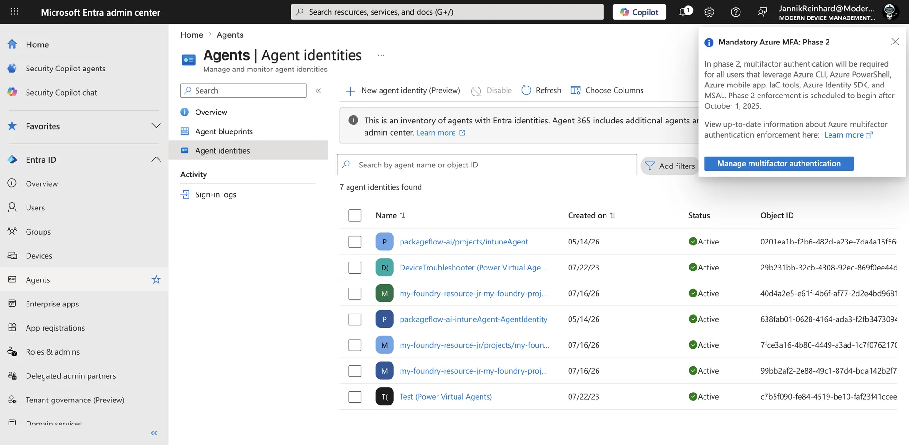
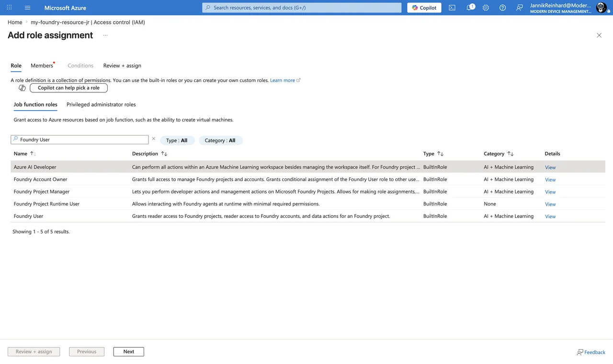
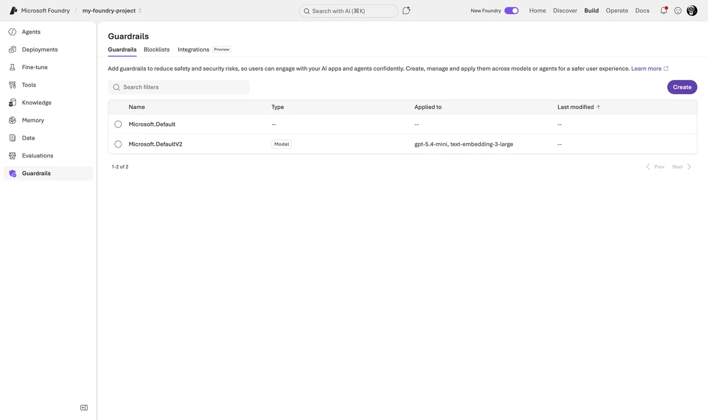

Secure Microsoft Foundry: Network, Identity and Guardrails
AI agents in production are a security topic, not only an AI topic. An agent has an identity, network paths, data at rest and a behavior that you need to control. In this blog post I explain how I secure Microsoft Foundry end to end, from the IT admin perspective: network isolation, agent identities, RBAC, encryption and guardrails. This is the checklist I would hand to any team that wants to move a Foundry agent from playground to production.
I think about it in four layers, and I will walk through them in this order.

Layer 1: How Do I Isolate the Network?
Microsoft Foundry has three network planes you control separately: inbound traffic to the Foundry resource, outbound traffic from the resource to dependent services, and the network of the agent runtime itself.
Inbound is classic Azure. You add a private endpoint on the Foundry account and set public network access to Disabled. The click path for an existing resource: Azure portal â your Foundry resource â Resource Management â Networking â Private endpoint connections â + Private endpoint, target subresource account. Whoever creates the endpoint needs Network Contributor on the VNet, and approving the connection needs Contributor or Owner on the resource.

Note: A Foundry account answers under three DNS namespaces, so you need three private DNS zones linked to the VNet: privatelink.cognitiveservices.azure.com, privatelink.openai.azure.com and privatelink.services.ai.azure.com. If only one zone exists, some SDK calls resolve privately and others still go public, and you get very confusing 403 errors. With your own DNS servers, forward these zones to the Azure DNS address 168.63.129.16.
The agent runtime is the interesting part. With the standard agent setup you inject the runtime into a delegated subnet in your own VNet. The requirements are specific: the subnet must be delegated to Microsoft.App/environments (agents run on Azure Container Apps infrastructure), minimum /27, recommended /24, one dedicated subnet per Foundry resource, and the VNet must be in the same region as the resource. In return you bring your own data resources, so all agent state stays in your tenant:
- Azure Cosmos DB â threads and messages
- Azure Storage â files the agent works with
- Azure AI Search â vector stores

That means conversation history and uploaded files are at rest in your tenant, under your encryption and residency rules, and Microsoftâs guarantee for the injected setup is: no public egress. There are ready-made Bicep and Terraform samples for the whole setup â use them, the dependency chain is long, and the deploying identity needs Foundry Account Owner at subscription scope plus role-assignment rights.
Note: Agent networking is a create-time-only decision. You cannot add VNet injection to an existing Foundry resource and you cannot change the delegated subnet later â you redeploy. Also, private endpoints to your Cosmos DB, Storage and AI Search are not created automatically; each needs its own endpoint and DNS zone.
And now the honest part that the architecture slides skip: even in a fully injected setup, not every agent tool uses your VNet. This table is my data-exfiltration review checklist:
| Traffic path | Tools |
|---|---|
| Through your VNet subnet | Private MCP servers, OpenAPI tool, Azure Functions, A2A, Azure AI Search (via private endpoint) |
| Microsoft backbone | Function calling, Code Interpreter (no file up/download in a BYO VNet) |
| Public endpoints | Grounding with Bing, Web Search, SharePoint Grounding |
| Not supported behind VNet | Logic Apps, File Search, Browser Automation, Computer Use, Image Generation, Fabric Data Agent |
So Bing and SharePoint grounding leave your network boundary even when everything else is private. If your compliance rule is âno public endpoints, periodâ, block these tools with Azure Policy rather than assume the VNet catches them. Trace ingestion to Application Insights also has no private path yet, so observability needs the monitoring FQDNs on the firewall allow-list.
Layer 2: Which Identity Does an Agent Have?
This is where Microsoft did something genuinely new. With Microsoft Entra Agent ID (generally available since April 2026), agents get first-class identities in Entra â visible, governable and revocable like users and service principals.
How it works in Foundry (details): when the first agent in a project is created, Foundry provisions an agent identity blueprint plus a shared agent identity for the project. All agents in development share this identity, so you can experiment without ceremony. When you publish an agent, it gets its own dedicated blueprint and identity. At runtime no secrets are involved â the blueprint has a federated credential trust with the projectâs managed identity, and Entra issues short-lived tokens scoped to a specific audience like https://graph.microsoft.com. A wrong audience fails authentication even when the RBAC is correct, so keep that in mind when debugging.
For you as admin this means: open the Entra admin center under Agent ID â All agent identities, and you see every agent in the tenant â from Foundry, Copilot Studio and third-party platforms. From there you can apply Conditional Access to agents, watch risky agents in Identity Protection, and put lifecycle governance (owners, sponsors, expiration) on them.

Granting an agent access to a resource works like for any service principal:
# Give the published agent's identity access to a storage account
az role assignment create \
--assignee "<agentIdentityId>" \
--role "Storage Blob Data Contributor" \
--scope "/subscriptions/<sub>/resourceGroups/<rg>/providers/Microsoft.Storage/storageAccounts/<sa>"Hint: The publish step is a trap. Because publishing creates a new identity, the role assignments of the development identity do not carry over. Put âre-assign RBAC to the published agent identityâ into your release checklist, otherwise the agent works in dev and fails in production.
Note: Two Conditional Access gotchas from the docs: âall usersâ policies do not include agent user accounts, and anything that authenticates with an API key bypasses Conditional Access entirely. One more reason for the keyless setup in the next layer.
Layer 3: Who May Do What? The Foundry RBAC Roles
In May 2026 Microsoft renamed the built-in roles â Azure AI User is now Foundry User and so on. The role IDs and permissions stayed the same, so nothing breaks, but you may still see old names in some blades. These are the five roles I actually work with:
| Role | What it can do | I give it to |
|---|---|---|
| Foundry Agent Consumer | Only call agent endpoints | End users, calling apps |
| Foundry User | Build agents, run evals, call models â no deploy, no publish | Developers |
| Foundry Project Manager | Everything Foundry User can, plus manage projects and publish agents | Team leads |
| Foundry Account Owner | Create accounts/projects, deploy models â no data-plane build actions | Platform team |
| Foundry Owner | Everything, control plane and data plane | Break-glass, IaC pipeline |
Note: The portal role picker currently displays the agent-consumer role as Foundry Project Runtime User, not âFoundry Agent Consumerâ. Same role, same ID (eed3b665-ab3a-47b6-8f48-c9382fb1dad6) â do not let the name confuse you when you search for it in the IAM blade.
Hint: Because the names are still in transition, script role assignments with the role definition GUIDs instead of display names. That is Microsoftâs own guidance during the rollout. Foundry User for example is 53ca6127-db72-4b80-b1b0-d745d6d5456d.
Role assignments work on three scopes: account, project and even a single agent. The agent scope is evaluated only for endpoint access, so you can give an app permission to exactly one agent:
# Foundry Agent Consumer for a service principal on ONE agent only
az role assignment create \
--assignee "<sp-object-id>" \
--role "eed3b665-ab3a-47b6-8f48-c9382fb1dad6" \
--scope "/subscriptions/<sub>/resourceGroups/<rg>/providers/Microsoft.CognitiveServices/accounts/my-foundry-resource-jr/projects/my-foundry-project/agents/MyAgent"In the portal it is the normal flow: Azure portal â Foundry resource or project â Access control (IAM) â Add â Add role assignment. Project leads who never touch the Azure portal can do the same in the Foundry portal under Operate â Admin â select project â Add user.

Two details that are easy to miss. First, Azure Owner or Contributor on the subscription does not include data actions: a subscription owner can create the resource but cannot build or call agents. That confuses people in every project I have seen. Second, key-based authentication bypasses RBAC completely â whoever has the key has everything, without user attribution. Agents and evaluations do not accept keys anyway, so go Entra-only and disable local auth in your template:
properties: {
allowProjectManagement: true
customSubDomainName: 'my-foundry-resource-jr'
disableLocalAuth: true // API keys stop working; Entra ID only
}
Layer 4: How Do I Control Agent Behavior? Guardrails
Azure AI Content Safety in Foundry is now organized as guardrails and controls â the docs literally say âGuardrails (previously content filters)â. A guardrail is a named collection of controls, and each control defines a risk to detect, the intervention points to scan, and the action to take. New for agents: besides user input and output, you can now intervene at tool call and tool response (both preview, agents only). That is exactly where indirect prompt injection lives â a poisoned document coming back from a retrieval tool. Agent guardrails as a whole are still in preview; the model-side system is GA.
You configure guardrails per project under Build â Guardrails, and there is a fleet-wide view under Operate â Compliance â Guardrails. Creating them requires the Foundry Account Owner role.

What I switch on for a production agent:
- The four harm categories (hate, sexual, self-harm, violence) at medium severity â that is the default anyway.
- Prompt Shields for direct jailbreaks and indirect attacks embedded in third-party content.
- Task adherence (preview) â flags when the agent drifts away from its instructions or tool calls go off course.
- A blocklist with the internal terms that must never leave the company (custom term lists, regex supported).
Hint: An agent guardrail fully overrides the model guardrail â it does not merge with it. If you assign a slim guardrail to the agent, you silently switch off filters that the model deployment had. The inheritance rule is: no custom agent guardrail assigned â the agent uses the guardrail of its model deployment; custom guardrail assigned â only that one counts. Check the effective set, not the intended one.
Note: Not every control works for agents yet. Groundedness and Spotlighting controls apply to models only, and agents currently only support the âannotate and blockâ action. Check the applicability tables in the docs before you promise a control to your compliance team.
On top of the built-in guardrails I put Microsoft Defender for Cloud AI threat protection. Since February 2026 the Defender for AI Services plan also covers agents built with Foundry. It correlates Prompt Shields signals with Microsoft threat intelligence and raises alerts for jailbreaks, data leakage or credential theft into Defender XDR â where the SOC already lives. I wrote about the endpoint side of this in Protect AI agents with Microsoft Defender.
What About Encryption and Data Residency?
By default Microsoft manages the keys (AES-256). If compliance requires it, you can bring customer-managed keys from Azure Key Vault or Managed HSM. Requirements: key vault in the same region, soft delete plus purge protection enabled, RSA key with at least 2048 bits, and a managed identity with the Key Vault Crypto User role (or wrap/unwrap permissions). The click path: Azure portal â Foundry resource â Resource Management â Encryption â Customer-Managed Keys. Be aware this is a one-way door â you can move from Microsoft-managed keys to CMK, but not back.
The nice part of the standard agent setup: because threads, files and vectors live in your own Cosmos DB, Storage and AI Search, residency and encryption simply follow those resources â you apply each serviceâs own CMK there.
For the prompts themselves, the deployment type is the lever. Standard and Data Zone deployments process within the geography or data zone you chose; Global deployments process anywhere in the world â data at rest stays in your geography, processing does not. If your organization committed to the EU Data Boundary, use Data Zone or Regional deployments and keep Global SKUs out via Azure Policy. And the answer to the DPO question: for models sold by Azure, prompts and completions are not used to train the models and are not shared with the model providers. Partner models like Anthropic Claude run under the partnerâs data terms â read them before routing regulated data there.
The Approach I Actually Use
For a production rollout I do it in this order:
- Deploy the Foundry resource with network isolation from day one (Bicep sample 15), because you cannot retrofit VNet injection.
- Entra-only auth,
disableLocalAuth: truein the template. - RBAC minimal: developers get Foundry User on the project, apps get Foundry Agent Consumer on exactly one agent.
- Guardrail set per agent: defaults plus Prompt Shields plus blocklist; task adherence in annotate mode first.
- Defender for Cloud AI plan on, alerts wired to the SOC.
- CMK only if compliance explicitly demands it.
Pitfalls I Now Avoid
- Retrofitting network isolation. Not possible for the agent subnet. Decide before the first deployment.
- Forgetting RBAC after publish. New identity, empty permissions. Release checklist.
- Trusting âprivateâ for every tool. Bing and SharePoint grounding stay public â block them via policy if needed.
- Assigning slim agent guardrails. Override, not merge. Verify the effective filters.
- Searching for âFoundry Agent Consumerâ in the portal. The role picker says Foundry Project Runtime User. Use the GUID in scripts.
- Leaving API keys enabled âfor the quick testâ. They bypass everything this post is about, including Conditional Access.
Where This Is Heading
Agent security is converging with normal identity and network security, and that is good news: Conditional Access, RBAC, private endpoints and SOC alerting are muscles your organization already has. The Foundry Control Plane pulls governance of the whole agent fleet into one place, and Purview integration brings prompts and responses into the compliance world. My advice: treat every agent like a new employee â it gets an identity, least privilege, a network policy and supervision. Start with the network isolation docs and build the checklist from there.
I hope this saves you a security review round or two.
Stay healthy,
Cheers Jannik